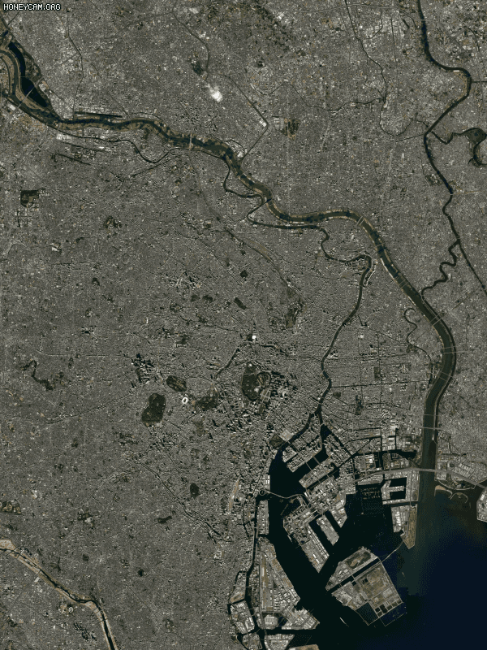

2019년 9월 ~2020년 2월
호주
호주 최악의 산불
뉴 사우스웨일스 주를 비롯한 빅토리아 주 등 오스트레일리아 남동부 해변지역이 큰 피해를 입었다. 산불로 인한 총 사망자 수는 28명, 그 중 소방대원이 10명이 사망, 건물 5700채가 전소 되었으며, 야생 동물, 곤충 등을 포함해서 12억 7000여마리가 소사했다.


 홈으로
홈으로


interface
Blue_Archive
예전부터 뉴스, 예능에서 자주 언급되었던 지구온난화, 자연재해 등등 가볍게 여겼던 문제들이 최근에는
우리 생활에서 몸으로 느껴질 만큼 너무나도 큰 이슈로 다가오게 되었다.
평균온도가 1.5도 상승시 홍수 위험이 100%로 증가하고, 2도 상승시 170% 증가
지구의 온도 상승은 사람 뿐만 아니라, 동물과 식물 그리고 곤충 등의 생물에게도 영향을 끼치며 과학 저널 science 에 실린 논문은 바다에서의 생물종 멸종 사태가 일어날 수 있음을 경고하였다.
지구 온난화의 영향으로 산호초 지역이 40% 가까이 줄어드는 등 여러 동식물의 서식지가 파괴되고 있다.
100만종년당 멸종수(extinctions per million species-years·E/MSY)인 멸종률이 100~1000E/MSY(100만종 가운데 매년 100~1000종이 멸종)로 나타나,
멸종이 자연적 수준보다 최대 1000배 빠르게 진행.
태풍이나 한파 만큼 폭염 역시 재난 위험을 증가 시키며 열로 인해 가뭄이 더 심해졌고, 산불이 일어나기 쉬운 환경이 조성되었다.
고기압의 정체로 인해 뜨거운 공기가 한 지역에 갇히는 열돔 현상이 일어나기도 하고,
빌딩, 도로, 산업 기반 시설들은 열을 흡수 해서 도심지역이 교외 지역 보다 최대 7도 이상 더 더워지게 되기도 함.
자원의 고갈과 국가 경제 위협
기후변화로 생태계가 변화하면서 인간의 자원이용 가능성도 역시 영향을 받게 되어, 생태계 안전망이자 진화의 핵심요소가 되는 생물종 다양성이 감소되고, 사막화로 인해 식용가능한 수자원이 고갈 되고 있다. 앞에서 살펴본 것처럼 농수산물의 생육이 제한 되므로 국가 경제에도 타격을 준다. 유엔 '기후변화에 관한 정부 간 협의체'(IPCC)가 작성한 보고서 에 따르면 만약 지구의 온도가 산업화 이전 시대보다 4도 상승한다면 세계 GDP는 10~23% 줄어들 수 있다고 발표하였다. 우리나라의 경우 세계 평균 기온 2도가 오르면 국내 GDP 8.5%가 줄어들게 되고. 2021년 현재 기준으로 무려 184조3000억원에 달하는 금액이 증발 하게 된다.
뉴 사우스웨일스 주를 비롯한 빅토리아 주 등 오스트레일리아 남동부 해변지역이 큰 피해를 입었다. 산불로 인한 총 사망자 수는 28명, 그 중 소방대원이 10명이 사망, 건물 5700채가 전소 되었으며, 야생 동물, 곤충 등을 포함해서 12억 7000여마리가 소사했다.
미국 콜로라도에서 하루에 35도 가량의 기온 변화가 일어남.
한 여름 미국에서 눈이 내리는 기적이 일어나버림
2021년 미국, 캐나다 서부 지역에서 일어난 폭염 사태
미국 캘리포니아 데스밸리가 54도 까지 치솟고 근처 지역에서는 섭씨 40~50도에 달하는 폭염과 가뭄이 있었다.
캐나다에서 폭염으로 719명이 사망 , 미국에서는 약 150명이 사망했다.
7월 30일 기준 터키 남부 지중해 주 22개 도에서 71건의 산불로 8명이 사망하고 200명 이상이 부상당하는 사건. 터키에서 네티즌이 터키를 돕자는 해시태크를 붙이자 터키 정부에서 국가에 대한 모욕이라며 해당 태그를 단 계정을 전부 블락해버렸던사건
전부 2021년에 일어난 사건
간단한 데이터 분석
전세계 각국 매월 평균 온도 변화를 측정한 데이터. 1960년 부터 지금까지 지속적으로 지구 온도가 높아짐.
북극해에 위치한 스발바르 얀마옌 제도가 가장 많은 영향을 받았다.
대서양 남쪽에 위치한 사우스조지아 사우스샌드위치 ㅋㅋ 이름이어떻게 샌드위치 ㅋㅋㅋ 제도가 가장 적은 영향을 받았다.
1961년부터 2019년까지의 기온 변화 데이터를 토대로 회귀분석을 하여 앞으로의 기온이 어떻게 변할지 예측.
선형 회귀분석과 함께 조금 더 정확한 예측을 위해 다항 회귀분석을 시도해보았다.
조금씩 조금씩 계속해서 올라가는 모습
해수면 상승시 뉴욕이 잠기는 모습 시뮬레이션
해수면 상승시 서울이 잠기는 모습 시뮬레이션
해수면 상승시 부산이 잠기는 모습 시뮬레이션
해수면 상승시 도쿄이 잠기는 모습 시뮬레이션
발생 횟수만 따져보면 2000년 후반 까지는 늘었지만 이후로는 오히려 줄어드는 모습
2000년 초반 화재가 눈에 띄게 많이 나는 구간이 있지만 그 이외에는 꾸준히 산불이 올라가는 경향을 보여줬다.
하지만 2017년이후는 횟수가 조금 줄어든 모습을 볼 수 있다.
그래서 산불 피해면적을 확인해보기로 하였다.
피해 면적은 2019년을 기준으로 급격하게 상승했으며
2018년보다 약 3배 높은 모습
건수가 아닌 피해 규모가 늘었다는걸 알 수 있다.
물론 1985년 이후로 급등하긴 했지만
미국의 산불은 오히려 줄어드는 모습을 볼 수 있다.
2020년 은 2006년에 비해 건수는 30%이상 줄어든 모습이다.
하지만 한국과 같이 피해 면적은 나날히 늘어가는 경향임
조금 편차가 있기는 하지만 일단 우상향하는 모습을 보여줌.
Co2, Power_Plant

전 세계적으로 태양열이 약 50%이상이 친환경 에너지를 사용하고있다.
하지만 대한한국은 약 38%가 석탄과 가스를 사용하고있다.
1960년 부터 2019년 까지 대륙 별 국가들의 탄소 배출량의 모습.
현대에 들어서면서 산업혁명을 이끌었던 유럽을 제치고 아시아 대륙에서의 배출량이 점점 높아지고있다.
주요 화석연료 수출국인 카타르가 압도적 1위를 계속 유지하고있다.
world bank에서 각국의 gdp 에 따라 소득 그룹을 나눠 놓은 데이터를 활용하여 탄소 배출량과 소득간의 관계를 분석
국가 소득이 높은 국가들의 탄소 배출량이 소득이 적은 국가보다 월등히 높은 것을 볼 수 있으며,
각 소득 그룹별 탄소 배출량의 모습이 유사한 것을 확인
소득이 높은 그룹이 여전히 압도적인 배출을 하고 있지만, 현재 줄어드는 추세인 반면,
중위 소득 이하의 그룹은 1970년대 말 오일쇼크 이후 1980년대 초 세계를 강타한 불황기에 경제활동 위축으로 이산화탄소 배출량이 10억톤 가량 줄었던 시기 이후
점진적으로 계속 배출량이 상승하고 있습니다.
탄소 배출량이 작은 하위 소득 그룹은 기온 변화로 인해 하위 그룹의 gdp 타격이 큼


.jpg)


.jpg)
.jpg)
.jpg)